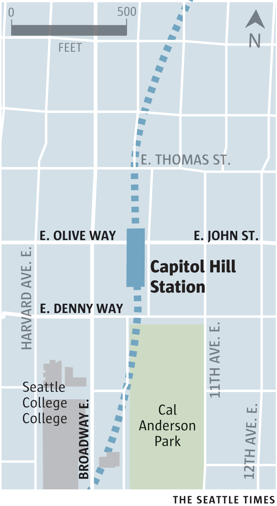
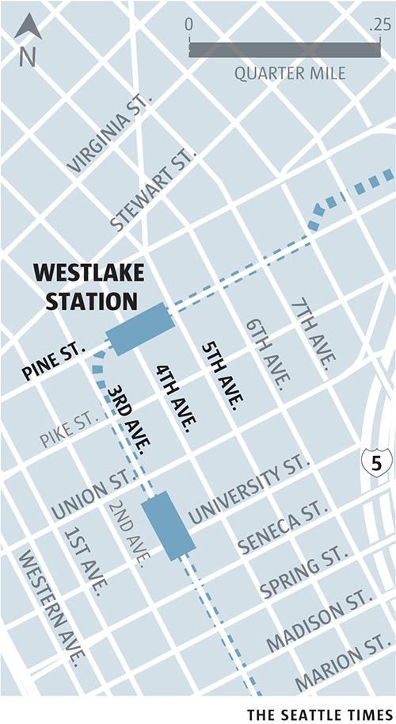
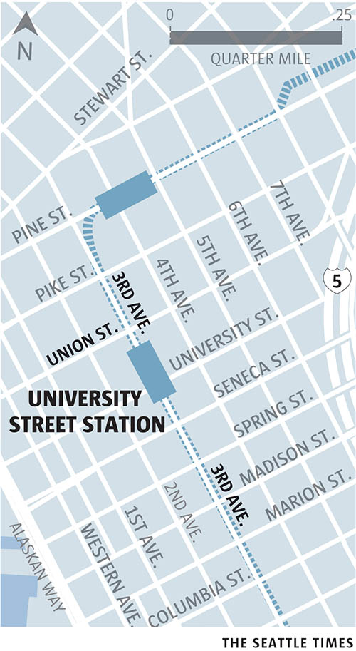
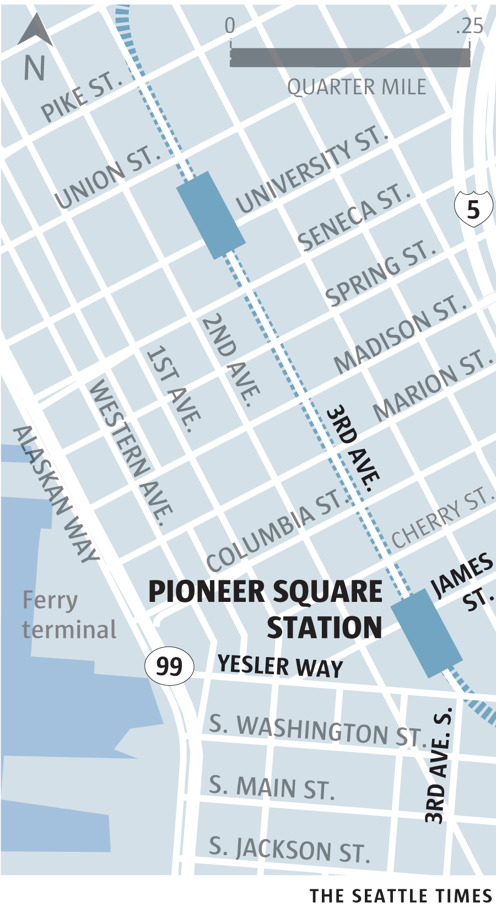
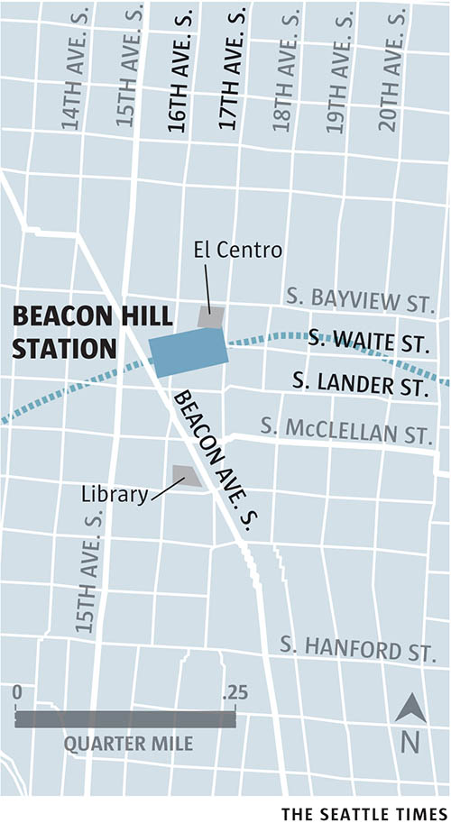
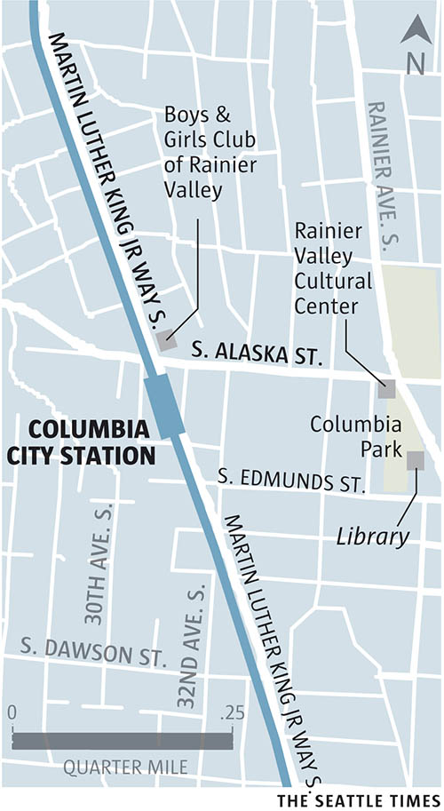
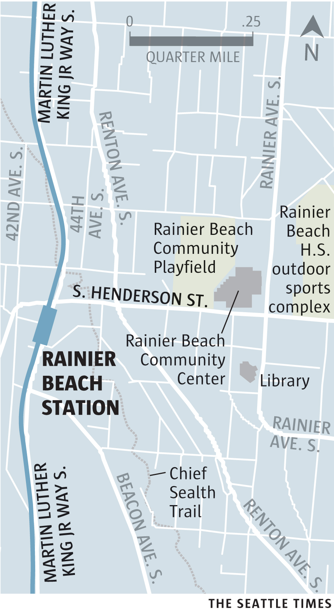
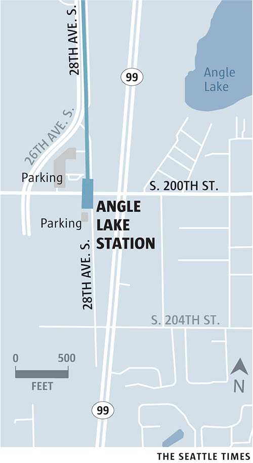

TRANSIT TOURISM
Explore Seattle by Link light rail
By Tyler Sipe and Lindsey Wasson
It’s urban, suburban and industrial. At just over 20 miles long, Sound Transit’s Link light rail connects more than a dozen diverse communities with 16 stations in King County.
From the University of Washington on the north end, to SeaTac’s Angle Lake neighborhood on the south, riders can explore and experience arts, culture, history and nature with a $6.50 all-day Sound Transit ticket.
See our Seattle Newcomers Guide to learn more about navigating area neighborhoods.
Click a station below to learn more about the surrounding neighborhood.
<%= t.include("./assets/lightRailStations.svg") %>
University of Washington Station
<%= t.include("_galleryTemplate.html", {keyword: "uw"}) %>
<%= t.include("_topTemplate.html") %>
<%= t.include("_galleryTemplate.html", {keyword: "capitol"}) %>
<%= markdown.capitol %>

<%= t.include("_topTemplate.html") %>
<%= t.include("_galleryTemplate.html", {keyword: "westlake"}) %>
<%= markdown.westlake %>

<%= t.include("_topTemplate.html") %>
University Street Station
<%= t.include("_galleryTemplate.html", {keyword: "university"}) %>
<%= markdown.university %>

<%= t.include("_topTemplate.html") %>
<%= t.include("_galleryTemplate.html", {keyword: "pioneer"}) %>
<%= markdown.pioneer %>

<%= t.include("_topTemplate.html") %>
International District/Chinatown Station
<%= t.include("_galleryTemplate.html", {keyword: "international"}) %>
<%= markdown.international %>
<%= t.include("_topTemplate.html") %>
<%= t.include("_galleryTemplate.html", {keyword: "stadium"}) %>
<%= t.include("_topTemplate.html") %>
<%= t.include("_galleryTemplate.html", {keyword: "sodo"}) %>
<%= t.include("_topTemplate.html") %>
<%= t.include("_galleryTemplate.html", {keyword: "beacon"}) %>
<%= markdown.beacon %>

<%= t.include("_topTemplate.html") %>
<%= t.include("_galleryTemplate.html", {keyword: "baker"}) %>
<%= t.include("_topTemplate.html") %>
<%= t.include("_galleryTemplate.html", {keyword: "columbia"}) %>
<%= markdown.columbia %>

<%= t.include("_topTemplate.html") %>
<%= t.include("_galleryTemplate.html", {keyword: "othello"}) %>
<%= t.include("_topTemplate.html") %>
<%= t.include("_galleryTemplate.html", {keyword: "rainier"}) %>
<%= markdown.rainier %>

<%= t.include("_topTemplate.html") %>
Tukwila International Airport Station
<%= t.include("_galleryTemplate.html", {keyword: "tukwila"}) %>
<%= t.include("_topTemplate.html") %>
<%= t.include("_galleryTemplate.html", {keyword: "seatac"}) %>
<%= t.include("_topTemplate.html") %>
<%= t.include("_galleryTemplate.html", {keyword: "angle"}) %>
<%= markdown.angle %>

<%= t.include("_topTemplate.html") %>
Reporting by Tyler Sipe and Lindsey Wasson
Design by Frank Mina
Web development by Audrey Carlsen
Originally published December 12, 2016.
<%= t.include("./partials/_dontMiss.html", { data: [
{ link: "http://www.seattletimes.com/seattle-news/transportation/check-out-uws-new-light-rail-station-and-how-it-could-transform-seattle/", image: "station.jpg", category: "Transportation", head: "Check out UW’s new light-rail station — and how it could transform Seattle" },
{ link: "http://projects.seattletimes.com/2016/st3-guide/", image: "st3.png", category: "Transportation", head: "ST3: What you'd pay, what you'd get" },
{ link: "http://projects.seattletimes.com/2016/quizzes/seattle-neighborhoods-quiz/", image: "neighborhoods.jpg", category: "Quiz", head: "New to Seattle? Find your neighborhood." },
{ link: "http://projects.seattletimes.com/2016/bus-sketches/", image: "bus.jpg", category: "Seattle Sketcher", head: "The bus riders of Seattle: their loves, frustrations — and hopes" }
]}) %>